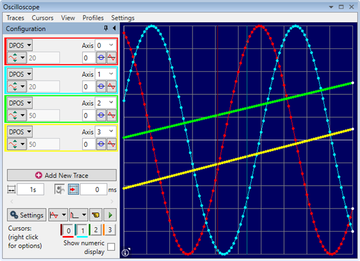

The oscilloscope has four visualization modes.

This is the normal operation mode for an oscilloscope where each set of gathered data is plotted against time.
In this mode channels are grouped in pairs and the values form one channel are plotted against the values of the other one in the pair. The grid is stretched to uniformly fit the view and it is not possible to zoom and pan it.
This mode is similar to normal XY Mode and channels are grouped in pairs to form a 2D curve. The main difference is that the grid is not stretched to fit the view but instead the same scale factor is applied to X and Y directions. In this mode it is possible zoom in and out and also to pan the view to the desired part of the curve.
Panning is performed by pressing the left mouse button and moving the mouse while the button is depressed. It is also possible to pan using keyboard arrow keys.
Zooming can be performed by using mouse wheel when available or by pressing the middle mouse button and moving the mouse up or down while the button is depressed. It is also possible to zoom using the keyboard with Shift-Up and Shift-Down key combinations.
In this mode three channels are grouped together to form a 3D curve and the captured values of the channels represent X, Y and Z coordinates of the control points. It is possible to orient, pan and zoom the 3D view in order to visualize better part of interest.
Rotating the view is performed by pressing the right mouse button and moving the mouse while the button is depressed. It is also possible to rotate the view using the keyboard arrow keys while holding Control modifier key.
Panning is performed by pressing the left mouse button and moving the mouse while the button is depressed. It is also possible to pan using keyboard arrow keys.
Zooming can be performed by using mouse wheel when available or by pressing the middle mouse button and moving the mouse up or down while the button is depressed. It is also possible to zoom using the keyboard with Shift-Up and Shift-Down key combinations.
The XYZD mode allows to visualize processes like welding and gluing. It is a 3D visualization mode where four channels are used together. The captured values of the first three channels represent X, Y and Z coordinates of the control points and the values of the fourth channel represent the thickness/size of the control point. The values of the thickness channel are transformed based on selected scaling factor and offset and normalized by clamping to the range of [0, 1]. Thus normalized values are mapped linearly between minimum thickness defined by trace size and maximum control point thickness as defined in settings.
The XYZUVW mode allows to visualize 3D position and orientation at the same time. It is a 3D visualization mode where six channels are used together. The captured values of the first three channels represent X, Y and Z positional coordinates of the control points and the values of the last three channels called U, V and W represent consecutive rotations around X, Y and Z axes to form the final orientation of the control point. The values of the U, V and W channel can be in degrees or radians. Orientation is displayed as 3 orthogonal axes originating from a control point centre. It can be drawn red for oX, green for oY and blue for oZ axis or using channel colours. In order keep 3D view not too cluttered, orientation axes might not be displayed for every control point depending on sampling rate and zoom factor of the view.